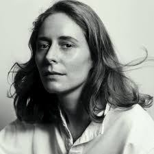
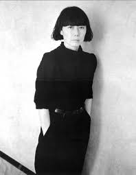
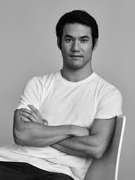
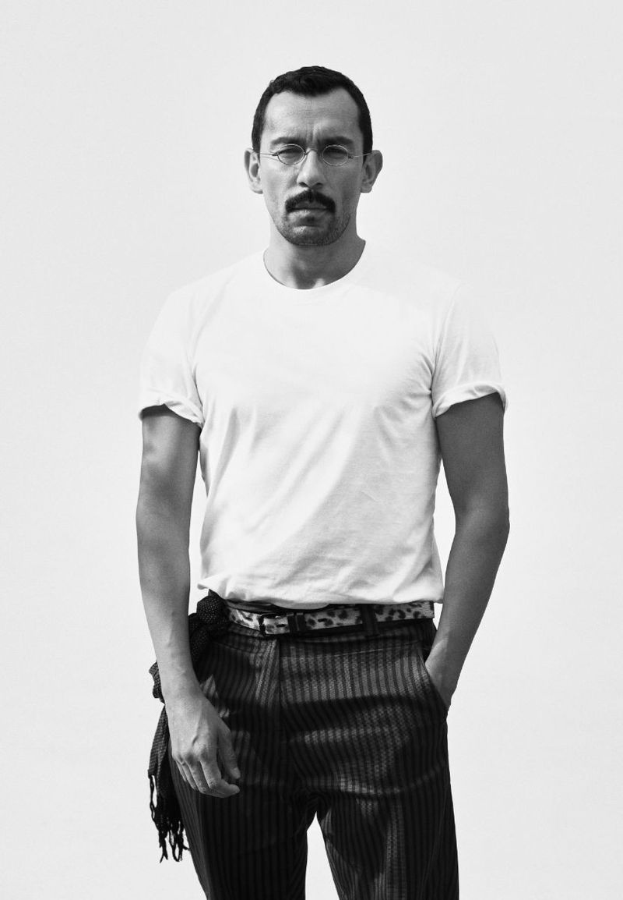
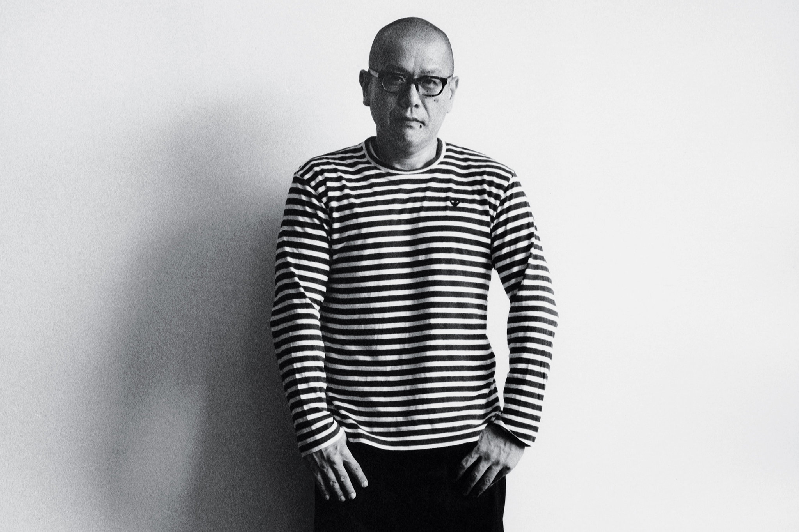
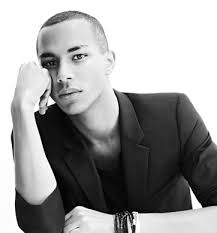
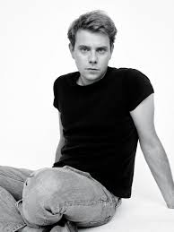
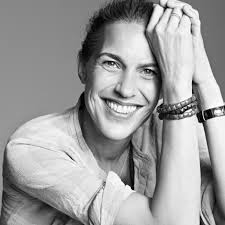

Luxury high-end retail brands are at the top end of the clothing industry.
These are status symbol brands, made in very limited quantities and not typically found online immediately
after a collection launches. Sold through flagship stores and luxury boutiques worldwide, these are articles
that are sometimes right off the runways -- the same styles that are worn by models in Milan, Barcelona, and London.
Sometimes impractical, often exciting, always expensive, these are the seasonal collections that are meticulously
conceived by world-renown fashion designers -- Versace, Prada, Armani, and many more. It's important to note that
many of these luxury brands have different tiers of collections - the main luxury line typically stands apart from the
bridge lines and diffusion lines that may also share the brand name. For example, "AX | Armani Exchange".
Hermes

Fashion Designer Fashion Designer Thierry Hermes founded his saddlery company in 1837. His family were originally
Protestants from Germany who settled in Paris around 1828. Gradually he added boots, jewelry, home decor items, and silk
scarves. His son Charles-Emile Hermes (1835-1919) and grandsons Adolphe Hermes and Emile-Maurice (1870-1951) continued to
run the family firm after Thierry died. Emile-Maurice Hermes, Theirry’s successor, realized at the turn of the 20th century
that travel was fast moving away from the horse and towards plane, car, and train travel. He responded by manufacturing trunks,
bags, overnight cases, all from his family’s signature saddle leather. He also purchased the building at 24 Rue Faubourg
St.-Honoré in Paris, which still houses the flagship store as well as the workshops.
Commes des Garcons

Daughter of a University lecturer, Rei Kawakubo originally studied fine art at Keio University, Tokyo. After graduating she went
on to work in the advertising department of a chemical company. Uninspired she moved onto working as a freelance stylist in 1967.In
1973 she established her own business, Commes des Garçons, French for “like the boys”. Initially starting as a denim-heavy
brand, two years later she presented her collection in Tokyo. The success followed by Kawakubo opening her first boutique in Tokyo.
In 1978 Kawakubo launched a menswear collection. Three years later, Kawakubo took Comme des Garçons to Paris, debuting her all-black
anti fashion designs, Kawakubo shocked her audiences.The early nineties saw Kawakubo publish a biannual magazine ‘Six’, standing
for sixth sense, comprising of pictures that inspire her.
Altuzarra

"My mission is to design a modern wardrobe for women to feel confident and sexy in their everday lives" -Altuzarra. Founded by
creative director Joseph Altuzarra in 2008, Altuzarra is a luxury women's ready-to-wear and accessories brand. Joseph's seductive
aesthetic combines modernity, feminity, and an unapologetic sexiness. Offering a fresh perspective on the modern woman's wardrobe.
Born and raised in PAris, Joseph Altuzarra has been interested in the transformative power of fashion from a young age. He draws
from his French, American and Chinese backgroun and his avid interest in different facets of culture and art to create his rich
and sophisticated collections. Since the launch of Altuzarra in 2008, Joseph has recieved numerous accolades for his work.
From Forbes' 30 under 30 and Vogue fashion fund AWA to the Woolmark Prize. In 2014, Joseph won the council of fashion designers
of America's prestigous womenswear designer of the year, and in 2017, the accessories council's designer of the year.
Haider Ackermann

In 2001, Ackermann designed his own women’s wear collection to be presented at the Paris Fashion Week under his own label.
The premium leather clothing specialist, Ruffo was impressed by Haider’s 2002 collection and offered him work at Ruffo Research.
In 2004, Ackermann won the Swiss Textiles Award. He relocated to Paris in 2005 to follow his love interest and set up a studio
which was financed by BVBA 32, a Belgian company. At the Premiere of Oceans Thirteen at the Cannes Film Festival, Tilda Swinton
was spotted wearing Ackermann’s metallic suit. He presented his fall 2009 collection in 2008 through which the designer gained
red carpet credibility. In talks with Women’s Wear Daily, Ackermann said that what the fashion industry needed at the time were
outfits that were more focused on beauty and sensuality rather than sexuality.
Junya Watanabe

In 1992 he started designing under his own name for the brand, called ‘Junya Watanabe Comme des Garcons’. The following year
he showed his collection in Paris.In 2007, Watanabe started a collaboration with Converse to design a range of the iconic All-Star shoes.
Two years later in 2009, his designs were chosen by Michelle Obama. Wearing a blue pattern cardigan she chose the designer for her trip to London.
With his designs keeping to the Comme des Garçons aesthetic, Junya Watanabe is known for his innovative and technologically advanced designs that
show an appreciation of avant-garde cutting. Watanabe has been called a ‘techno couture’, but like his mentor, is renowned for keeping to the pure
lines and stark shapes.
Celine
Originally started as children’s shoe business, the French company expanded during the sixties into adult footwear, accessories and a women’s
ready-to-wear sports collection. With the expansion, Céline opened distribution in Japan, making them the first luxury brands to do so.
With the global partnership, Céline started an international expansion, which resulted in boutiques in Monte Carlo, Geneva, Hong Kong and Rome.
Throughout the 80’s and 90’s the house took a backseat to other luxury brands. Bernard Arnault took over the company in 1987 and set about to revive
the business. Céline Vipiana had been in charge up unto 1997, when the reigns where handed over to Michael Kors who was named the first ever creative
director and women’s ready-to-wear designer. Kors’s managed to turn the fashion house around with his successful ready-to-wear lines and accessories
collections.
Balmain

By 1951, Balmain opened various branches of his label across America to sell his prêt-a-porter collections. During this time, he popularized some
unique trends such as stoles, evening wear and in addition to this made sheath dresses with jackets a fad in the fashion market. He was talented in creating
both simple and extravagant clothes, all with the similar aesthetics of graceful and slender lines. Moreover, he also designed iconic uniforms of Singapore
Airlines crew, based a little on traditional kebaya of Indonesia.
Loewe

Loewe is a Spanish luxury fashion house specialising in leather goods, clothing, perfumes and other fashion accessories. Founded in 1846, Loewe approaches 175
years as the oldest and one of the world’s major luxury houses. The company was established in 1846 when a group of Spanish leather craftsmen in Madrid were
joined by Enrique Loewe, a merchant of Hessian origin. By the early 20th Century, many notable people took great interest in Loewe and Queen Ena of Spain became a
regular customer. In 1905, Alfonso XIII granted them the Royal Warrant of Appointment and thus Loewe became Purveyor of the Royal Household of Spain. The company
quickly grew in popularity and was promoted by figures such as Ernest Hemingway, Ava Gardner, Rita Hayworth, Marlene Dietrich and Sophia Loren amongst others.
Paco Rabanne
In 1966 Rabanne released his first collection entitled ‘12 Unwearable Dresses in Contemporary Materials’. Embellished with rhodoid, sequins and plaques the
collection marked the beginning of Rabanne’s view of design as experimentation using unusual materials. During the sixties Rabanne’s oversized earrings, sunglasses
made of fur and other accessories became a huge media and commercial success. His material of choice, rhodoid, could create infinite combinations of colours and form
which mirrored the effects produced by Op Art. Desiring to make his fashion more accessible, Rabanne launched a series of paper dresses in 1967. The soft, lightweight
fabric was a cheaper alternative which Rabanne used with coloured adhesive tape to bind it together.
Isabel Marant

Marant began designing only for her friends, but following her collaboration with Christopher Lemaire, Marant chose to make fashion her profession, quickly establishing
herself as a fixture of Paris’ ready-to-wear week. Her laid back aesthetic is littered with rock girl references, tactile fabrics and a Parisian’s attitude to silhouette:
long and lean or louche and short. Marant’s designs both her main collection and her diffusion line, Isabel Marant Étoile, which are both sold all over the world. The brand
also has nearly 40 directly-owned boutiques globally and an e-commerce site. However, the designer told W she approached own store expansion with caution, “When you have too
many stores, everything is so important; if you have a failure somewhere, everything comes crashing down.”